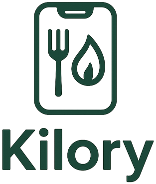

Kinetra Group
Türkiye merkezli başlayıp yapay zekâ odaklı tüketici ürünleri ile kurumsal otomasyonu aynı teknoloji, güvenlik, veri ve dağıtım disiplininde birleştirmek üzere planlanan çift motorlu yapı.

Kinetra Studios
yapay zekâ destekli ürün stüdyosu; fikir, tasarım, ilk çalışan ürün sürümü, test, güvenlik, kullanıcı doğrulaması, lansman ve büyüme.
Stüdyo modeliSynapse Automate
Kurumsal yapay zekâ otomasyonu, Müşteri Talebi ve Satış Takip Sistemi ve ilk uygulama sonrası tekrarlayan kurumsal teslimat modeli.
Kurumsal hizmetler
Kilory
yapay zekâ destekli beslenme, aktivite, planlama ve sosyal motivasyon ürünü.
Ürün sayfasıOrtak teknoloji, izinli veri içgörüleri ve dağıtım kabiliyeti.
Grup tezi; tüketici ürünleri ile kurumsal otomasyonun ortak teknoloji omurgasından yararlanırken veri, gizlilik ve marka sınırlarını kontrollü biçimde korumasıdır.
Tüketici ürünleri + kurumsal çözümler
Uygulama geliri ve kurumsal tekrarlayan gelir ile tek ürün veya tek müşteri tipine bağımlılığı azaltmayı hedefler.
Yeniden kullanılabilir teknoloji birikimi
Kimlik, analiz, bilgi tabanı, kalite testi, ödeme ve dağıtım bileşenleri kontrollü biçimde tekrar kullanılabilir.
Öğrenme döngüsü
Kullanıcı bağlılığı, gelir modeli, kalite ve operasyon sinyalleri sonraki ürün ve hizmet kararlarını güçlendirebilir.
Çekirdek işler doğrulandıktan sonra genişleme opsiyonları.
Yapay Zekâ Girişimleri, Yapay Zekâ Akademisi, Altyapı Hizmetleri ve Çözüm Pazaryeri mevcut faaliyet değil; yatırımcı sunumundaki orta vadeli seçeneklerdir.
Yapay Zekâ Girişimleri
Girişim yatırım ve ortaklık opsiyonu.
Yapay Zekâ Akademisi
yapay zekâ eğitim teknoloji yapısını.
Altyapı Hizmetleri
yapay zekâ altyapı ve yönetim hizmetleri.
Çözüm Pazaryeri
yapay zekâ çözümleri pazar yeri.